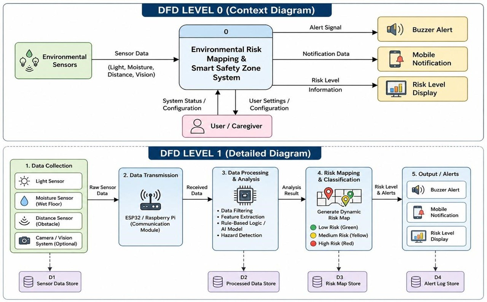

Environmental Risk Mapping
Detect environmental risk (slippery floors, poor lighting, obstacles) through vision and IoT sensor fusion.
What this component is
The Environmental Risk Mapping component analyses the factors in each location of the home, such as moisture, light and distance to obstacles, to decide whether the surroundings put someone at risk of falling.
Light, moisture and distance sensors, with an optional camera, collect raw data. A communication module forwards it for filtering, feature extraction and rule-based or AI-model hazard detection. The result is a dynamic risk map in which every area is marked low (green), medium (yellow) or high (red), and the caregiver is told through a buzzer, a mobile notification and a risk-level display.
How it works
- Data collectionA light sensor, a moisture sensor for wet floors, a distance sensor for obstacles and an optional camera vision system collect raw data.
- Data transmissionAn ESP32 or Raspberry Pi communication module sends the raw data onward.
- Data processing and analysisData filtering, feature extraction, rule-based logic or an AI model, and hazard detection.
- Risk mapping and classificationA dynamic risk map is generated and each location is classified as low, medium or high risk.
- Output and alertsA buzzer alert, a mobile notification and a risk-level display tell people where the danger is.
The research gap
Look at the room, not only at the person
Fall-prevention tools usually watch the person and ignore the place. Wet floors, poor lighting and obstacles are checked separately, or not at all, so a risky spot is noticed only after someone has fallen.
This component fuses vision with low-cost IoT sensors into a live, location-level risk map, so hazards can be fixed before a fall happens and the environment can inform the alert that follows a fall.
System diagram

Click to enlarge